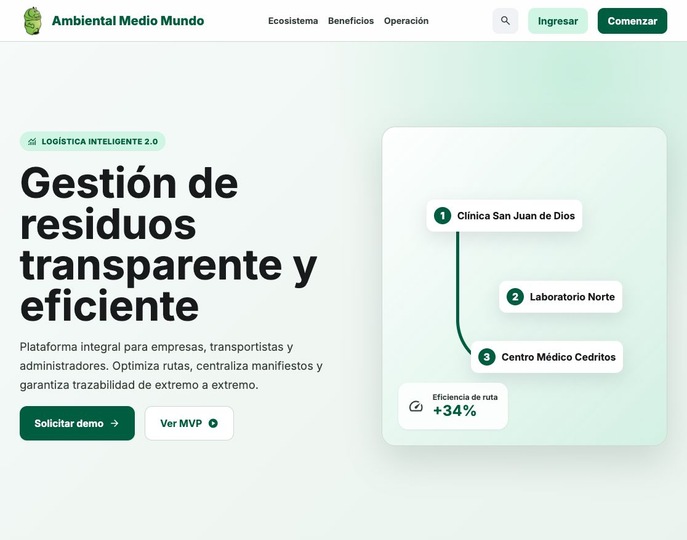
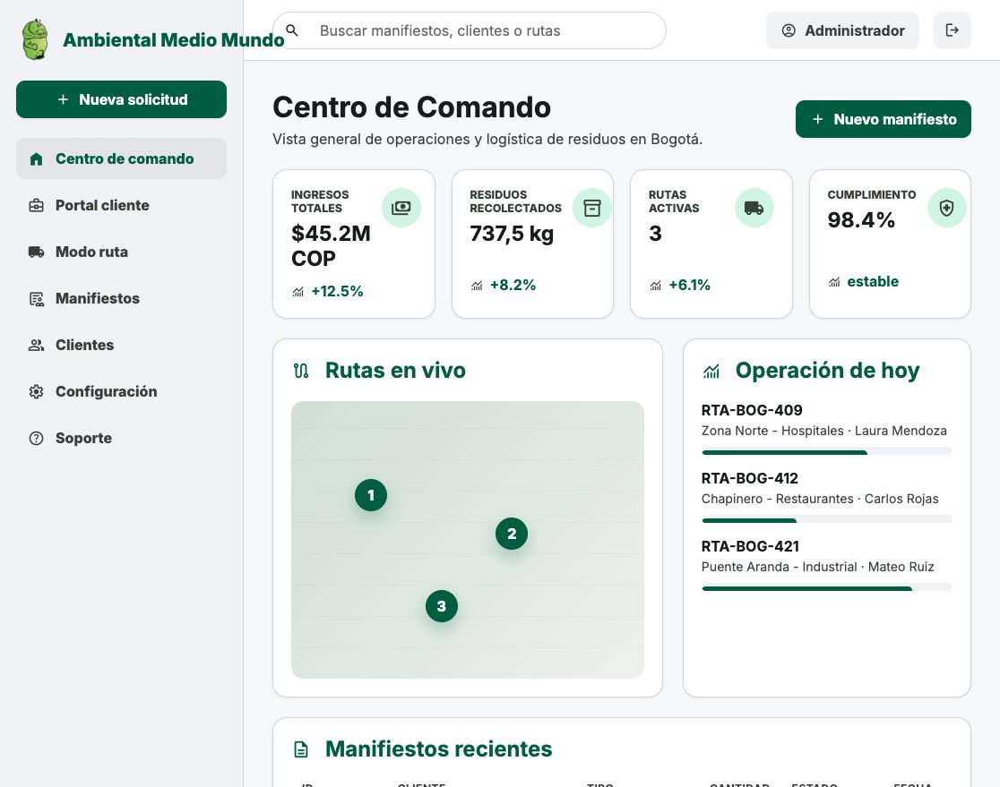
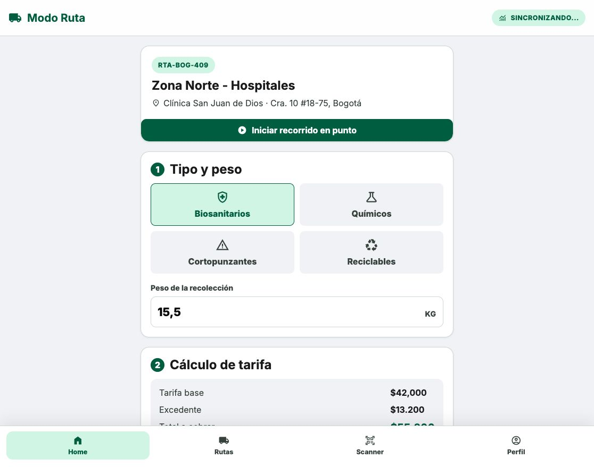

Medio Mundo
De MVP visible a plataforma operativa segura
Ruta técnica, funcional y financiera para convertir el avance actual en un software auditable, multitenant y listo para pilotos reales con cliente.

El MVP ya demuestra la experiencia, pero aún no es producción
Landing, login, dashboard, portal cliente y modo ruta funcionando en Netlify.
Auth, tablas iniciales, RLS básico y manifiestos guardándose desde la app.
Faltan APIs de negocio, auditoría profunda, roles reales, validaciones y jobs.
Se requiere staging/QA espejo de producción para validar antes de publicar.
El backend es el motor que no se ve, pero sostiene todo
Mientras el frontend es la pantalla que usa el cliente, el backend valida reglas, protege datos, calcula tarifas, registra auditorías, expone APIs y conecta servicios externos.
Ya existe una base inicial
Supabase cubre autenticación, base de datos y APIs automáticas para el MVP.
Falta backend de negocio
Servicios propios para reglas de residuos, facturación, permisos, documentos, auditoría, integraciones y procesos programados.
Ejemplos concretos
- Validar que un conductor solo vea sus rutas asignadas.
- Bloquear edición de un manifiesto ya certificado.
- Generar PDF de certificado con consecutivo auditable.
- Enviar notificaciones y recordatorios automáticos.
- Registrar quién cambió cada dato, cuándo y desde dónde.
Infraestructura propuesta para QA y producción
Canales
- Web React / Next.js
- Android / iOS con React Native
- Portal cliente y operación interna
Backend
- Supabase Auth + Postgres
- Edge Functions / Node APIs
- Jobs programados y webhooks
Datos
- Modelo multitenant
- RLS por tenant y rol
- Storage de firmas, fotos y PDFs
Operación
- Netlify deploy previews
- Sentry + logs + alertas
- Backups, auditoría y monitoreo
La interfaz ya permite vender la visión del sistema
El dashboard enseña rutas, manifiestos, KPIs y operación del día. Esta pantalla sirve para demostrar dirección de producto, no para cerrar todavía auditoría operativa completa.
Validable hoy
Login, navegación, lectura de datos y creación básica de manifiesto.
Siguiente salto
CRUD completo, permisos, auditoría, reportes, certificados PDF y trazabilidad.


Modo ruta será el corazón operativo en campo
Debe funcionar incluso con señal limitada, validar firmas, fotos, pesajes, geolocalización, tiempos, pagos y sincronización segura.
Faltantes críticos
Modo offline, control de duplicados, evidencia fotográfica, firma real en canvas, QR, GPS, validación de ruta, sincronización con cola y auditoría de cambios.
Configuración multitenant para crecer sin mezclar datos
| Capa | Diseño recomendado | Validación en QA |
|---|---|---|
| Tenant | Tabla `organizations` con planes, NIT, configuración, límites y branding. | Un usuario de empresa A nunca ve datos de empresa B. |
| Usuarios | `profiles`, `memberships`, roles por tenant: owner, admin, cliente, conductor, auditor. | Pruebas automatizadas de permisos por rol. |
| Datos | Todas las tablas operativas con `tenant_id` obligatorio e índices compuestos. | Políticas RLS y queries revisadas contra fuga de datos. |
| Archivos | Buckets por tenant o paths con `tenant_id`: firmas, fotos, certificados, soportes. | Acceso firmado y expiración por rol. |
| Auditoría | Eventos inmutables con actor, tenant, IP, dispositivo, acción y diff. | Reporte exportable por periodo y usuario. |
Módulos funcionales para producción
Operación
CRUD clientes, sedes, rutas, vehículos, conductores, residuos, tarifas, manifiestos y certificados.
Cumplimiento
Cadena de custodia, evidencias, auditoría, vencimientos documentales, reportes normativos y exportables.
Finanzas
Tarifas dinámicas, órdenes de servicio, pagos, cartera, facturación electrónica o integración contable.
Documentos
Generación PDF, firmas digitales, anexos, certificados de disposición final y versionado.
Notificaciones
Email, WhatsApp/SMS opcional, alertas de ruta, estado de manifiesto y recordatorios.
Administración
Roles, permisos, planes, límites por tenant, configuración de marca y analítica operacional.
Faltantes para un deploy seguro
| Riesgo | Acción requerida | Prioridad |
|---|---|---|
| Tokens expuestos en chat | Revocar y rotar GitHub, Supabase y Netlify. Configurar secrets por entorno. | Alta |
| RLS básico | Reescribir políticas por tenant/rol y añadir pruebas de aislamiento. | Alta |
| Frontend con anon key | Mover reglas sensibles a Edge Functions/API backend. Mantener anon solo para operaciones permitidas. | Alta |
| Auditoría insuficiente | Tabla `audit_events` inmutable, triggers y logs de acciones críticas. | Alta |
| Backups y retención | Backups automáticos, pruebas de restauración, política de retención y exportaciones. | Media |
| Hardening deploy | CSP, security headers, branch protection, deploy approvals, scans de dependencias. | Media |
Ambientes y flujo de validación
Dev
Vibe coding rápido con ramas cortas, datos de prueba y revisión visual diaria.
QA / Staging
Replica producción: otra base Supabase, otro site Netlify, datos anonimizados, pruebas E2E y UAT.
Producción
Deploy aprobado, monitoreo activo, backups, alertas y rollback listo.
Gate antes de producción
Un cambio solo pasa si cumple lint, pruebas unitarias, pruebas E2E, revisión de permisos, validación responsive, pruebas de carga ligera, revisión de auditoría y aceptación funcional por rol.
Herramientas y lenguajes recomendados
| Frente | Stack | Razón |
|---|---|---|
| Web app | Next.js / React, TypeScript, Tailwind o CSS Modules, Zod, TanStack Query | SEO, rendimiento, tipado, formularios robustos y datos cacheados. |
| Mobile | React Native + Expo, TypeScript, Expo Router, SQLite/local storage | Un equipo comparte lógica con web y permite Android/iOS más rápido. |
| Backend | Supabase Postgres, Edge Functions, Node.js/TypeScript, SQL migrations | Velocidad para MVP y base sólida para permisos, APIs y jobs. |
| QA | Playwright, Vitest, Testing Library, Lighthouse CI | Prueba flujos críticos, regresiones visuales y rendimiento. |
| Observabilidad | Sentry, Supabase logs, Netlify logs, uptime monitor | Errores, tiempos, trazabilidad y alertas de caída. |
| Vibe coding | Codex, GitHub PRs, issues cortos, prompts versionados | Velocidad con control: cada iteración se valida con pruebas y revisión humana. |
Visibilidad para buscadores y motores generativos
SEO avanzado
- Next.js con SSR/SSG para páginas públicas.
- Metadata por servicio, ciudad, tipo de residuo y sector.
- Schema.org: Organization, LocalBusiness, Service, FAQ, Breadcrumb.
- Core Web Vitals, sitemap, robots, canonical, Open Graph.
- Contenido técnico: manifiestos, cumplimiento, trazabilidad, logística ambiental.
GEO: Generative Engine Optimization
- Páginas con respuestas claras para IA generativa.
- FAQs estructuradas, glosario y fuentes normativas.
- Datos consistentes de empresa, servicios y cobertura.
- Casos de uso, comparativas y contenido citacional.
- Archivo `llms.txt` y resumen semántico del producto.
Ruta de 16 semanas hacia piloto productivo
Requisitos, roles, modelo multitenant, mapa de riesgos, definición de QA y backlog.
Migraciones, RLS por tenant, APIs, auditoría, storage, ambientes dev/QA/prod.
Clientes, sedes, residuos, rutas, manifiestos, tarifas, certificados y administración.
Modo ruta, offline, QR, firmas, evidencias, sincronización y build de tiendas.
Pruebas E2E, permisos, carga ligera, seguridad, reportes y corrección de bugs.
Capacitación, documentación, contenido público, monitoreo y estabilización.
Rango de esfuerzo incluyendo CRUD y debugging
| Bloque | Horas estimadas | Incluye |
|---|---|---|
| Producto + UX | 100-140 h | Flujos por rol, prototipos, ajustes con cliente, documentación funcional. |
| Backend + datos | 220-300 h | Modelo, APIs, RLS, auditoría, storage, jobs, integraciones. |
| Web app CRUD | 240-340 h | CRUD completo, formularios, tablas, filtros, certificados, dashboard. |
| Mobile Android/iOS | 260-380 h | Modo ruta, offline, cámara, QR, firma, builds y pruebas. |
| QA + seguridad + debugging | 220-320 h | E2E, regresión, bugs, hardening, permisos, rendimiento. |
| SEO/GEO + contenido técnico | 70-110 h | SSR, metadata, schema, contenido, llms.txt y medición. |
| DevOps + despliegue | 80-130 h | Ambientes, CI/CD, monitoreo, backups, rollback, secrets. |
| Total inicial | 1.190-1.720 h | Rango realista para pasar de MVP a piloto productivo auditado. |
Herramientas y sostenimiento estimado
| Herramienta | Uso | Costo mensual estimado | Notas |
|---|---|---|---|
| Supabase Pro | Base de datos, Auth, Storage, Edge Functions | Desde USD 25 | Sube por cómputo, storage, egress y proyectos adicionales. |
| Netlify | Hosting web, deploy previews, CDN | USD 0-50 inicial | El plan actual usa créditos/uso; validar en dashboard según tráfico y builds. |
| Sentry | Errores, performance, alertas | USD 0-30 inicial | Plan gratuito puede bastar para QA; producción requiere cuota mayor. |
| Email transaccional | Invitaciones, certificados, alertas | USD 0-20 | Resend/Postmark/SendGrid según volumen. |
| Dominio + DNS | Dominio corporativo, DNS, seguridad | USD 1-3 | Normalmente USD 12-35/año según dominio. |
| Apple Developer | Publicar app iOS | USD 8,25 aprox. | USD 99/año. |
| Google Play Console | Publicar app Android | Pago único USD 25 | No es mensual recurrente. |
| Monitoreo/Uptime | Alertas de caída | USD 0-10 | Puede iniciar gratis. |
| Total herramientas | QA + piloto pequeño | USD 35-140/mes | Sin contar horas del equipo ni costos por alto tráfico. |
Valores sin impuestos, sujetos a tasa de cambio y consumo real. Estimación válida para piloto pequeño.
Operación mensual después del piloto
Corrección de bugs, soporte menor, backups, monitoreo, revisión de logs y pequeños ajustes.
Nuevas funciones, mejoras de UX, reportes, automatizaciones y soporte a usuarios.
Integraciones, facturación, analítica avanzada, optimización móvil y hardening continuo.
Recomendación contractual
Separar desarrollo de nuevas funcionalidades del soporte recurrente. El soporte debe incluir SLA, horario de atención, severidades y tiempos de respuesta.
Checklist de aceptación antes de producción
Técnico
- RLS probado por tenant y rol.
- Backups y restauración verificados.
- Logs y auditoría inmutable.
- Pruebas E2E de rutas críticas.
- Monitoreo, alertas y rollback.
- Headers de seguridad y CSP.
Funcional
- CRUD completo aprobado por rol.
- Manifiesto con evidencias, firma y certificado.
- Flujo de conductor validado en campo.
- Reportes operativos y exportables.
- Capacitación y manual rápido.
- UAT firmado por Ambiental Medio Mundo.
Decisiones para iniciar la siguiente fase
1. Alcance piloto
Definir número de clientes, conductores, rutas y documentos reales del primer ciclo.
2. Modelo multitenant
Aprobar roles, permisos, límites y branding por organización.
3. QA productivo
Crear ambiente QA separado y criterios de aceptación por módulo.
4. Seguridad
Rotar tokens, configurar secrets, auditoría, backup y protección de ramas.
5. Mobile
Confirmar si se lanza con PWA, Expo interna o publicación en tiendas.
6. Comercial
Preparar demo con datos reales, historia de valor y métricas de impacto.
Próximo paso recomendado: Sprint 0 de 2 semanas para cerrar requisitos, arquitectura, QA y backlog priorizado.